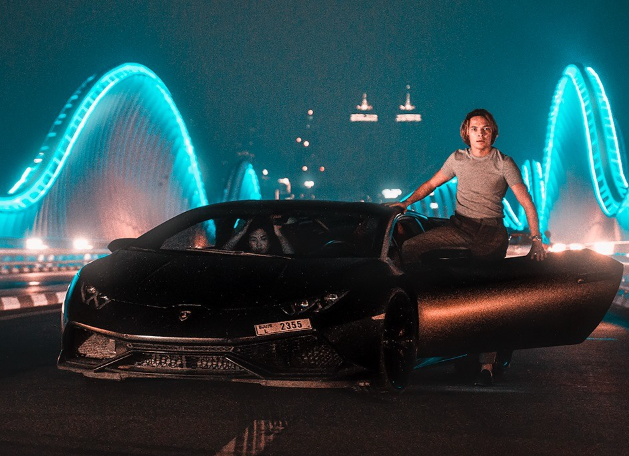
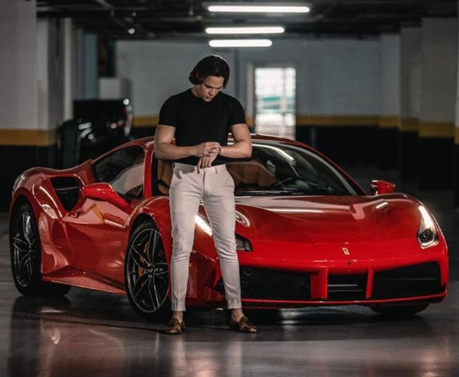

Finch conquistou seu primeiro milhão antes dos 21 anos de idade. Ele ficou conhecido no meio do marketing digital por ter conseguido um grande resultado (+20M em vendas) em seu primeiro lançamento do curso Nômade Milionário, em 2021.
Thiago também é conhecido pelo seu estilo cinematográfico de produção de conteúdo e storytelling envolvendo viagens, carros luxuosos, bem como por ter popularizado o conceito de negócios baseados em PLR no Brasil.
Os seus bens
Não só como todas as viagens de luxo que o Milionário mostra, mas também como alguns dos bens materiais dele:


Sendo um dos seus maiores sonhos, o seu carro "preferido" o queridinho camaro, que foi um dos seus primeiros carros a se obter.
Em uma lista pequena para ficar claro, estes são os seus automóveis: Corveti, Lamborghini, Camaro, Uno.
Uma vez em seu story da rede social "instagram", disse "todos estes bens com carros são apenas 6% de tudo que eu tenho", isso conta com um total de pelo menos
somando todos os carros do empreendedor, daria algo em torno de 6 Milhões.
Muitos dizem que o seu Patrimônio já passou dos 50 milhões anuais.